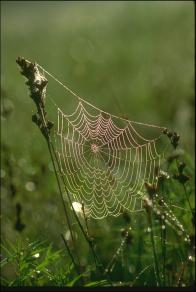

Note : Une métaphore bien inhabituelle: le poète qui vit reclus tout en restant conscient de l'agitation du monde qu'il consigne dans ses écrits ressemble à l'araignée qui guette au centre de sa toile. Pas si inhabituelle, à y regarder de plus près. Voici ce qu'écrivait le poète américain Walt Whitman (1819-1892): O LA SILENCIEUSE et patiente aragne! Elle occupe, à l'écart, sa petite nacelle. J'ai vu que pour sonder le vide qu'elle habite Ellle lançait un fil, puis d'autres, sortant d'elle, Obstinée, inlassable, toujours plus et plus vite. De même toi, mon âme, aux lieux où tu te tiens, Cernée de toutes parts d'immenses mers d'espace, De songer, de tenter, lancer point ne te lasses -- Scrutant les sphères pour entre elles mettre un lien. Jusqu'à ce que le pont qu'il te faudra s'érige-- Que le ductile ancrage en quelque point se fige ; Qu'en quelqu'endroit s'accroche le Fil de la Vierge Que tu lances, O mon âme! |

Transl. Christian Souchon 01.01.2005 (c) (r) All rights reservedXII SPIDER Spider. A recondite pursuit. A spot. A pit. All my horizon, for my hunting tightly tied, Is made up of waiting, vibration and of hide. But is echo this craft in which arose and lit Up a dawn, either song or void, and the farthest Point where are abolished border, centre, summit, A trap where I do catch the whole world and myself? Or else is it the night which slumbers in my fist? Spider who has woven and thought out my fate. Akin to the abyss in which flutters my mind, Cry turned into the keep wherein I am confined. I shall, free of cunning, get back, dispassionate, To my safe centre where my calm storm lies in wait.